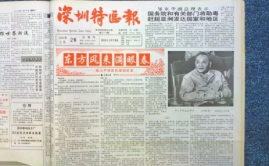
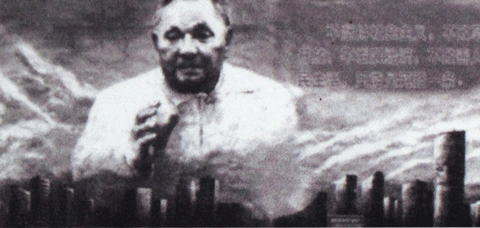
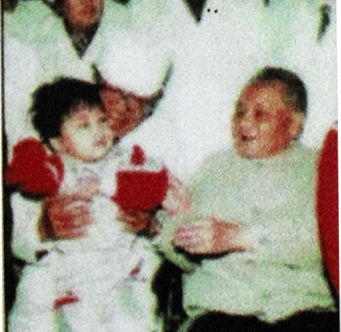
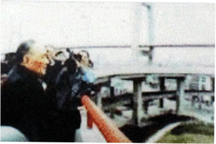
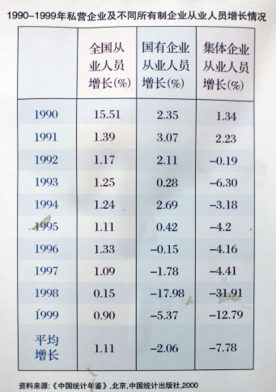
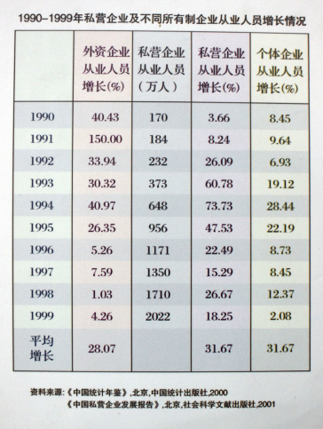
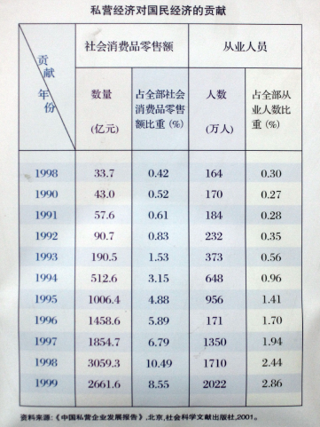

1992年初，邓小平先后到武昌、深圳、珠海、上海等地视察，并发表了一系列重要讲话，重申以经济发展为中心，提出三个"有利于，加快改革进程，确立了社会主义市场经济体系。
南巡讲话之后，私营经济迅猛发展，外资企业大量进入中国，由于政策上的优惠，外资及私营经济大量地挤垮了乡镇企业和国有企业，由于私营和外资企业主要集中在沿海发达地区，90年代中后期，大量的农村进城务工潮开始出现。

1992年深圳特区报
东方风来满眼春
1992年初，邓小平从武汉到深圳、珠海，再到上海，一路走、一路看、一路谈。那年的春节，各种版本的有关邓小平的话题成为人们拜年时的热门谈资。终于，谜底在3月26日被《深圳特区报》揭开了，长篇通讯《东方风来满眼春》详细描述了88岁高龄的邓小平在深圳视察的经过，首次公开披露了邓小平南方谈话的内容。邓小平在谈话中精辟地分析了国内外形势，回答了几年来经常困扰人们思想的许多重大理论问题和认识问题，为我国经济体制改革确定了市场经济的目标模式。

1992年邓小平南巡不久，深圳市街头竖起了邓小平的巨幅画像

1月24日，小平参观珠海生化制药厂。
1月27日，小平考察珠海江海股份有限公司。
小平在深圳考察时与广东省委及深圳市、珠海市的负责人交谈
1月18日，小平在武昌火车站和湖北省、武汉市负责人亲切交谈

1月19日，小平在皇纲口岸深情地眺望着对岸的香港

1月20日，小平考察深圳先科激光公司
1月22日上午，小平到深圳仙湖植物园种树和游览

2月19日，小平参观上海南浦大桥，盛赞上海是中国经济的龙头
2月10日，小平参观上海贝岭微电子制造有限公司



展柜三：城市居民粮食供应证